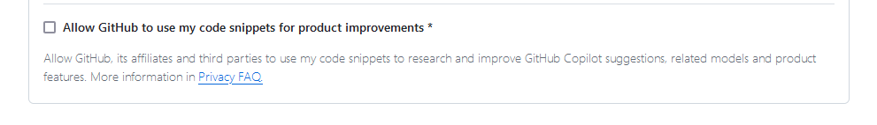

Ways of working
Ways of working
CEDA is a project within the pilot hub ‘Studiedata & AI’ (Educational data & AI) of the Npuls program. ADD_LINK This repository is used to document the ways of working within CEDA. This document discusses what type of activities CEDA executes and how this is done. Another document will discuss what our goals are and why these are the goals. In addition, there are certain procedural basics that are needed for collaboration, like getting access etc. These are discussed in the basics document ADD_LINK.
Activities
CEDA delivers the following types of activities:
- Data Analytics
- Think of data preparation, modelling and dashboarding of educational data.
- We build and actively share code for data analytics of national available data through public repositories
- Data Engineering
- Think of containerization, connectors to storage, analytics developer environments
- We build and actively share code and technical configuration for open source tooling that supports the sharing and (re-)usage of the data analytics repositories
- Alignment & Coordination
- Think of community contact, reference architecture and the role of analytics in flexibilisation
- We ensure that the results of the first two activities are aligned with:
- the practical needs of (data analists in) educational institutions
- the technical needs of the national IT infrastructure
- the strategic vision for Dutch tertiary education
These activities all have their own specific guidelines and requirements. However, some overarching ways of work can be defined.
General
Repository guidelines
CEDA strives to have clear names for repositories since they might be growing.
All commit messages should be in British English and have the style:
<type>: <specification>
Types should be, if reasonably possible, chosen from the following list:
| type | usage |
|---|---|
| fix | For commits that fix bugs |
| add | For commits that add new functionality |
| temp | For commits that have temporary code |
| style | For commits that focus on style improvements |
| update | For commits that primarily update because data has been renewed |
| del | For commits that primarily remove scripts or code |
| move | For commits that primarily move scripts and code |
This makes commits much more easy to navigate and overview.
Open Source
Open source is more than publishing code on github. Also, it is not only a technical or marketing choice but aligned with our place in the public sector. See our goals document for more information (NOT YET AVAILABLE). Practically this means that there are specific guidelines set up for public code in public sector. CEDA strives to conform to these guidelines.
See for instance, the omprehensive general standard from public code. Regarding open source, we are in close contact with the SURF OSPO and others within Npuls.
Currently, there is no set SURF policy regarding open source. Until there is, we have a couple of guidelines and considerations:
For now, we will use the MIT licence. It is widely used and respected and easy to interpret.
For now, we will publish on Github. It is a commercial US-based platform, but the most widely used for open source software and it has many features. Potentially, alternatives like https://code.europa.eu/ and https://opencode.de/ might be considered.
Within Github you don’t have to allow Github to use your code for Github Copilot. Go in the top right corner to your avatar and click on ‘Copilot’. Make sure there is no checkmark at:

A drawback of open source is that, even with the limitations of this license and not offically allowing Github to use the code for Copilot, code might still be scraped without permission for commercial purposes like monetizing LLMs. This an inherent drawback about open source.
Data analytics
Data analytics guidelines: Repositories
Data analytics repositories are either one of the following:
- Data product (from raw data to clean, validated and enriched data)
- Does enriched belong to this or do we want to separate between clean & validated and enriched?
- In practice it is often mixed (for isntance, you enrich it to help with validation)
- Analysis product (based on data product but enriched with a model-based prediction)
- Information product (based on either a data or analysis product, but a visualization or sort of summary)
- Q: Is dashboard or final product a better name?
Data analytics guidelines: Language
Code of CEDA should be open source and machine readable. We support the following:
Python
R
Tableau
PowerBI
While Tableau and PowerBI are itself not open source, we can still deliver the logic of the dashboards open. We hope to be able to move from Tableau en PowerBI to fully open source solutions, but currently Tableau and PowerBI match the practical needs of our community
Q: Should we include other tooling or have at some point a survey about tooling?
Data analytics guidelines: Content of repository
Based upon: https://github.com/publiccodenet/standard/releases/
Every repository has code that runs successfully
There is a config file which has a setting for at least every institution-specific setting
- For instance, links to file locations, the name or BRIN of the institution, etc
A build file. All code can be run (see 1) by triggering one file
An instruction file which explains at least the goal of the data manipulation in this repository and the context (how the acquire the start data or a reference to a working example of a final product).
Every repository has a clear structure in line with the language-specific best practices for data science
- As CEDA we strive to define our own language-specific structure
Data dictionaries at start and end
- All the start data has a clear dictionary with metadata and meaning. This also goes for the resulting product
- As CEDA we strive to have common dictionaries based on the type of repository (data, analysis or information) regardless of specific language
- All the start data has a clear dictionary with metadata and meaning. This also goes for the resulting product
Well styled code, also language specific
- As CEDA we strive to more precise guidelines about code, in order to make repositories more alike each other
All files are machine-readable (.py, .R, .csv., .yaml, md, qmd).
All the data files at start and end of the repository are automatically checked by validation rules
- As CEDA we strive to have uniform data validation rules
Every repository has synthetic or dummy ‘start’ data
The main language in a repository is English. This goes for code, comments, documentation and column names. For specific terms a glossary can be provided.
- As CEDA we strive to align the glossaries over all repositories
- Something like column names might be difficult / confusing for users (at first).
Every repository is ‘complete’. It has synthetic data, necessary metadata, config, documentation, etc, within.
Question: Am I missing something? Or can things be removed?
Question: What about the order?
Data analytics guidelines: Project
One project will often have more than one repository (for instance: a data product repository and an information product repository). So in addition to the repository, there are additional goals:
- A working demo example oriented at end-users based on synthetic or dummy data
- A blog oriented at end-users to describe the whole project, some interesting real world insights about your own institution and potentially something about the embedding within your own institution
- One or more workshops with data science professionals from other educational institutions to get it working for them
Data analytics guidelines: Steps towards goals
Of course, data analytics is never done. The list above at contents of repository does not need to be achieved 100% in order to have a successful project. In addition, the starting point of specific sub-projects will differ.
Therefore, every lead of a subproject discusses with the CEDA project lead what the next few steps are (no need to plan the whole thing in detail, since we work agile).
Data engineering
Data engineering guidelines: Activities
The first set of repositories is about getting from raw data to useful information products. The data engineering part is about making it easy to set up and develop these repositories and making it easy to share and re-use this.
Developing useful functions and packages that can be used to run code from the data analytics repositories
Developing useful functions and packages that can be used within the data analytics repositories
Setting up Docker containers and Docker config files to support the usage other data science professionals usage of these repositories
Experiment and potentially facilitate connection to SURF tooling and other open source solutions
Data engineering guidelines: Packages
Packages follow the standards for packages in the language they are written. This includes:
- Publication in the most prominent package repositories: Pypi for Python and CRAN for R
- Usage of package tools that enable (re)building of packages like poetry for Python or devtools for R
- Github actions on every package repository to automatically check the (re)build
- At least a README and Github Page about the specific package and its usage
Data engineering guidelines: Containerization
Docker is de-facto standard so we will use this as well. We have the concept of analytics-in-a-box-in-a-box-… highlighting the several possibilities of boxing.
For instance, taking a data analytics repository, allowing the user to override the config settings to include local files, run all the code and provide the user locally with the resulting ‘data product’
An important element in containerization is to find the limits of what we can get to work and document also the ‘failures’. This is important, because CEDA could, if deemed useful, hire an external professional for advanced data engineering.
Data engineering guidelines: Integration
This is currently out-of-scope. SURF has already several services for research data storage, cloud services, etc. In the coming months we will connect with these groups to see what is already available, but no practical engineering will be done.